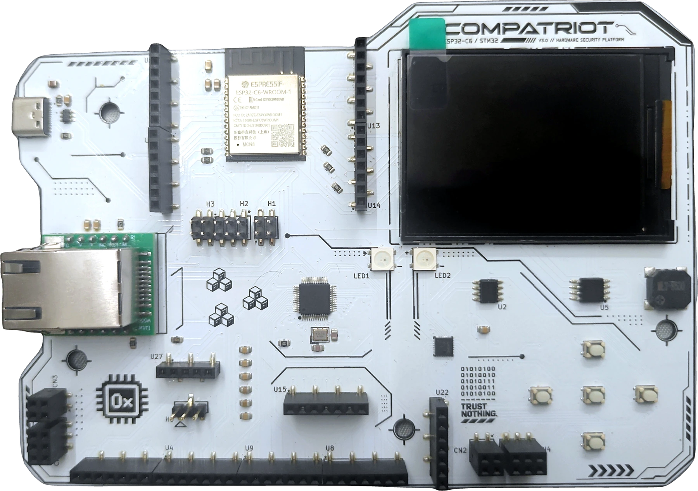
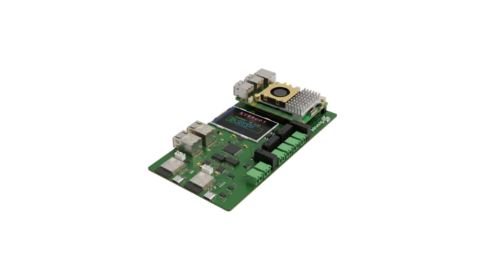

hardware hacking guides
Reference guides for the hardware badges run at Wired Village. Each page covers what a challenge is testing, which tool to use, and the exact bus or pin to connect to. It's not a full solve script. Pick a badge below.
|

CompatrIoT
Live
|
ESP32-C6 badge with a second STM32 target chip, a real CAN/UDS bus bridged over Ethernet, and exposed UART/I2C/SPI/SWD/BLE/WiFi peripherals built to be sniffed, dumped, and poked at. |
→ |

Sysrupt V2
Live
|
Portable OT Range V2. A complete OT/ICS hacking range on a single ESP32-S3 "Vanguard" badge: join its Wi-Fi and attack a live HMI, historian, and industrial protocols across 8 defensive and offensive challenges. |
→ |
|

Sysrupt V1
Live
|
Portable OT Range. A complete ICS/SCADA training lab simulating a water treatment facility across 5 network zones, 8 industrial protocols, and 10 progressive challenges. |
→ |